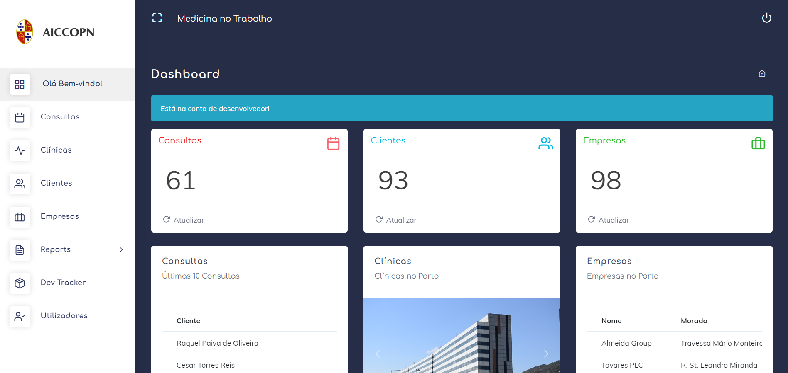
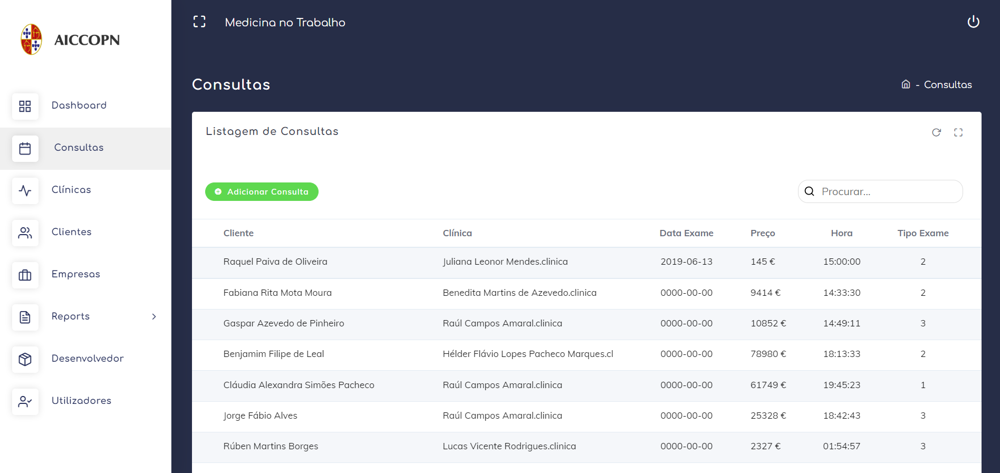
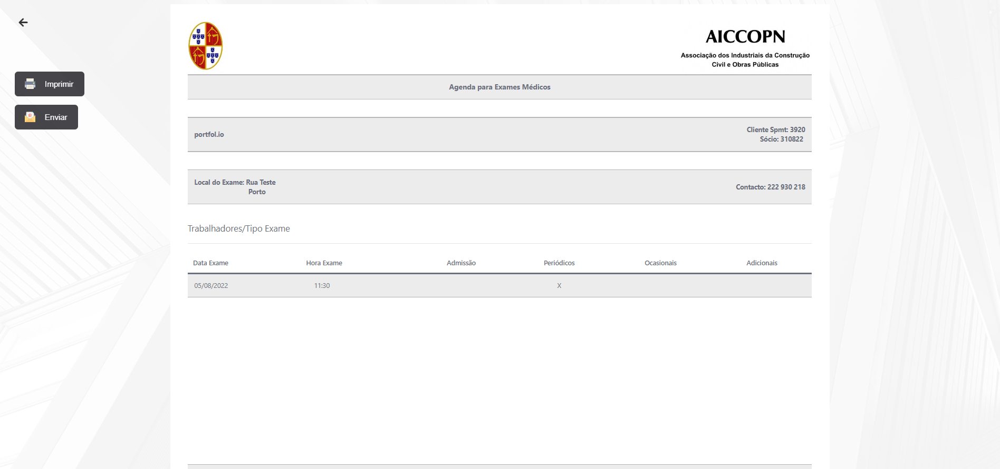

MediQ
O MediQuery é uma plataforma baseada no sistema CRUD (Create, Read, Update, Delete) desenvolvido em PHP e MySQL maioritariamente. Foi um desafio proposto no meu segundo estágio curricular de maneira a tentar facilitar o serviço relacionado com a medicina no trabalho por parte da associação AICCOPN.

Esta plataforma permite que o utilizador faça o registo de várias consultas para os funcionários das empresas associadas à AICCOPN. Permite também a pesquisa, adição, edição, e eliminação de consultas, clientes, clínicas e empresas registadas na base de dados. O sistema em si automatiza a marcação de consultas ao gerar ficheiros PDF ao apenas preencher um simples formulário.

